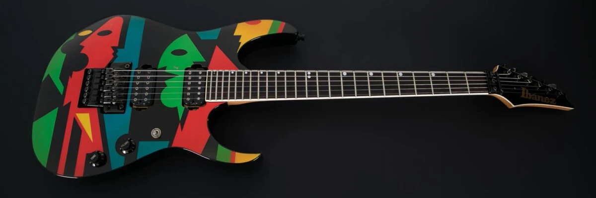

| Primer signature con Ibanez |
JPM100B |
- De la marca Ibanez fabricada en 1995
- Cuenta con un cuerpo de estilo americano atornillado a un mástil de arce aserrado en cuartos personalizado con un diapasón de palisandro de 24 trastes con encuadernación y marcadores de posición de puntos desplazados.
- El JPM100 se suspendió después de 1999
 |
|
| Segunda signature con la marca Ernie Ball Music Man |
JP6 |
- La guitarra JP6 es el modelo original John Petrucci de Music Man
- El cuerpo de basswood tiene un acabado duradero de alto brillo con líneas elegantes y un contorno ergonómico en el brazo.
- Los trastes de acero inoxidable, y un diapasón de palo de rosa y vienen con un brazo de maple ultraligero, para una ejecución rápido y de figura.
|
|
| Signature actual con Ernie ball |
MAJESTY |
- La Majesty es el resultado de la demanda inquebrantable de John de rendimiento, ejecución y diseño.
- la Majesty presenta un diseño de cuello a cuerpo, un acceso sin igual al trastes superior e inferior, una colocación económica del mando de control en línea y nuevas capacidades de conmutación de pastillas digitales que eliminan efectivamente el retraso entre la selección de pastillas. La Majesty es la ejemplificación de todo lo que sabemos que un modelo exclusivo de John Petrucci es: tecnología innovadora, rendimiento versátil y una sensación moderna y elegante.
- Cuenta con mejoras en su fabricación
- Cuerpo de caoba africana con tapa de arce flameado
- Cuenta con un cabezal a juego con finger board de ébano y 24 trastes de acero inoxidable
|
|